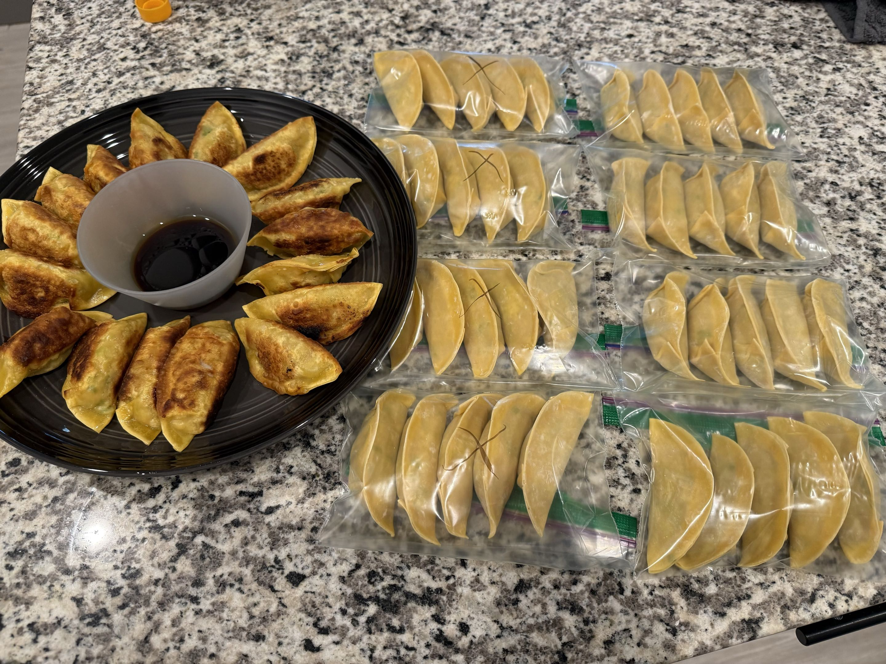
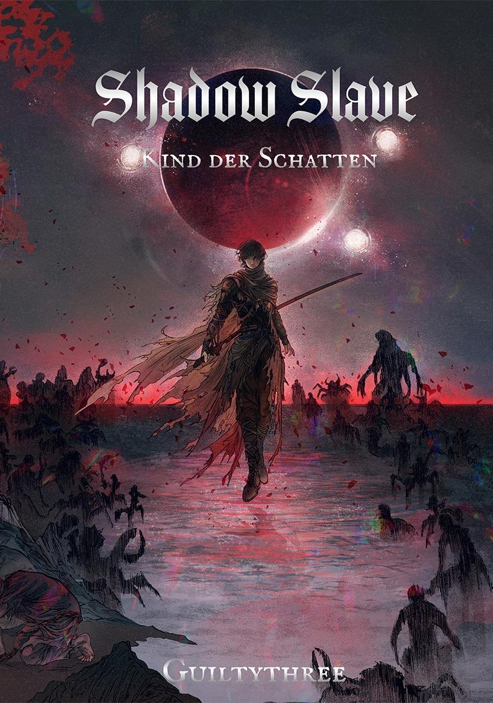
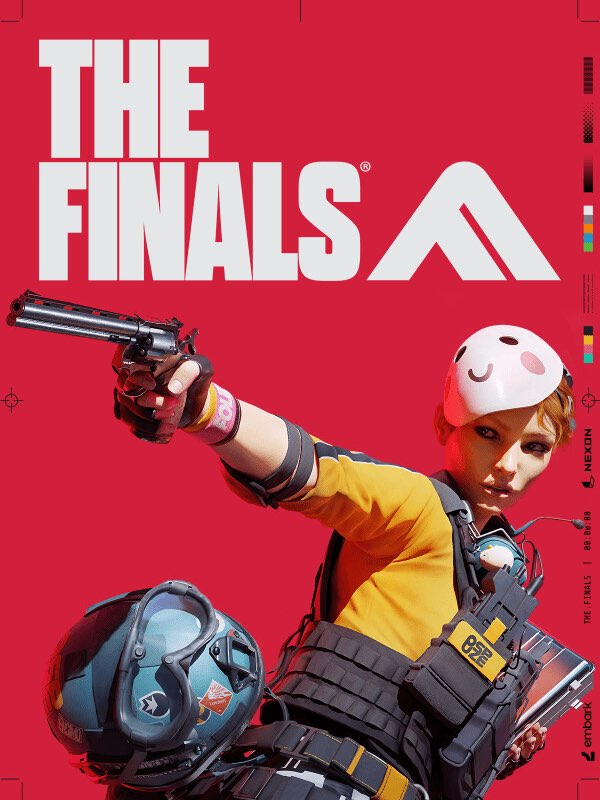

みなさん、こんにちは。シュレック・ジェイコブです。
大学四年生です。コンピュータサイエンスをべんきょうしています。
ひまなとき、ウェブしょうせつやまんがをよんだり、ゲームをしたり、バレーボールをしたりします。
りょうりも好きです。東南アジアのりょうりが好きです。
みなさんと一緒に日本語をべんきょうするのをたのしみにしています！
ウェブしょうせつ = web novels



END OF ENTRY 001■
はじめまして。
みなさん、こんにちは。シュレック・ジェイコブです。
大学四年生です。コンピュータサイエンスをべんきょうしています。
ひまなとき、ウェブしょうせつやまんがをよんだり、ゲームをしたり、バレーボールをしたりします。
りょうりも好きです。東南アジアのりょうりが好きです。
みなさんと一緒に日本語をべんきょうするのをたのしみにしています！
ウェブしょうせつ = web novels


